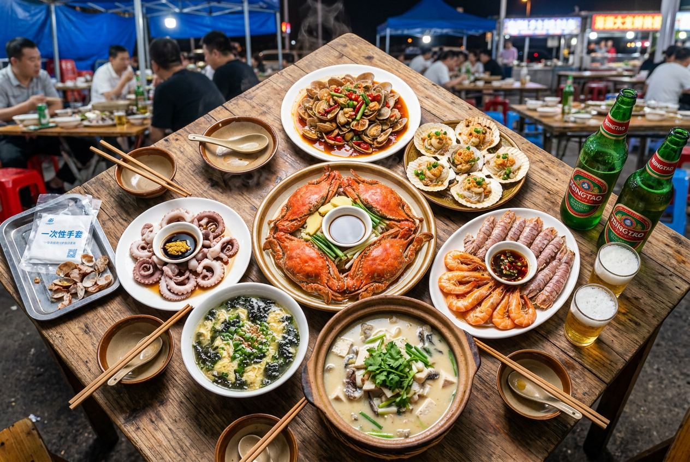
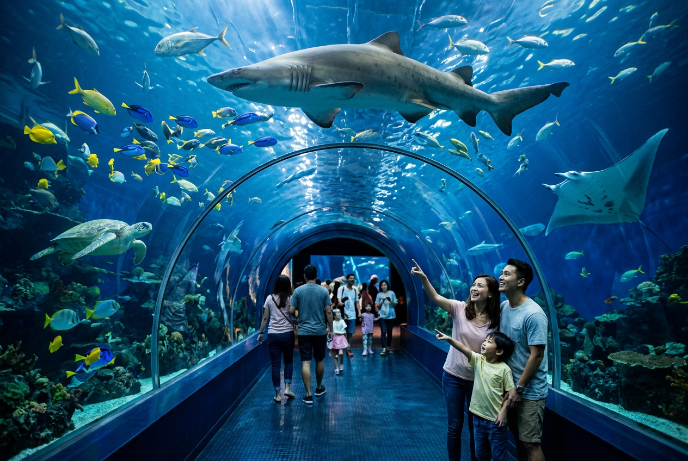
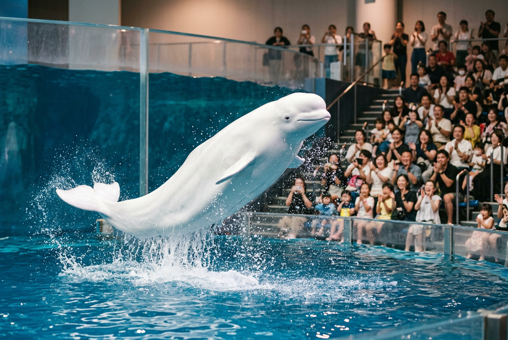

30 秒速览
一眼看懂 5 个方案 ☕
五套方案一览
| 方案 | 5.3 连云港 | 5.4 淮安 | 强度 |
|---|---|---|---|
| 🏆 A 山海萌宠 | 花果山 + 连岛 | 古镇 + 三岛 | ⭐⭐⭐ |
| 🏆 B 轻松海景 | 在中路 + 连岛 | 龙宫海洋世界 | ⭐⭐ |
| 📋 C 西游深度 | 花果山一整天 | 龙宫一整天 | ⭐⭐⭐ |
| 📋 D 古城运河 | 花果山 + 连岛 | 故里 + 夜游船 | ⭐⭐ |
| 📋 E 原计划修正 | 花果山 + 连岛 | 龙宫 + 肥猫岛 | ⭐⭐⭐⭐ |
行程时间轴
点任一时间点可直接编辑 · 底部「+新增」添加 📝
分组清单
出发前 · 旅途中 · 回程后 ✅
位置 & 路线
点地图加点位 · 选起终点画路线 · 点标记可跳高德 🗺️
路线规划
🚗 驾车
🚶 步行
搜索地名快速定位 · 点地图添加点位 · 点标记可编辑 / 设为起终点
所有点位
点击分组可展开 / 收起
美食专题
点店名跳大众点评 🍜

推荐餐厅
必吃清单
避坑口诀：先问单价再点菜；现抓现称看一下秤；不点"时价"那一栏；两人别超过 5 只大货，其余拿小吃凑份。
打卡机位
点图片可放大查看 📸



实用贴士
出行前看一眼，少走弯路 💡
雨天 Plan B
- 📍 连云港：海底世界 + 连云老街
- 📍 淮安：淮安府署 + 周恩来纪念馆
- ☂️ 折叠伞 + 一次性雨衣 + 防滑鞋
天气与穿搭
- 🌡️ 18–26℃，昼夜温差大
- 🌊 海边风大，薄外套必备
- ☀️ 遮阳帽 + SPF30+ 防晒霜
费用预估（人均）
- 🎯 方案 A：约 ¥1,200
- 🎯 方案 B：约 ¥1,160
- 🚄 高铁 ¥70–110
快速跳转
🐱🦀🚄
最后几句碎碎念
5.3 晚的高铁一定要提前订。五一后半程跨城也很拥挤。
肥猫岛比想的好太多，三岛奇遇记的艺术设计感很强。
淮扬菜建议早茶加正餐两顿都安排上。文楼汤包和软兜长鱼错过真的会想。
祝你两天玩得开心 ✨